Yapay Zekâ
İşletmelerde yapay zekâ, AI ajanları, RAG, chatbot, yapay zekâ mevzuatı ve AI destekli yazılım geliştirme.
Bu konuda okuma yolları:Yapay zekâya güvenli başlangıç6 yazıYapay zekâyı içeriden anlamak6 yazı
34 yazı
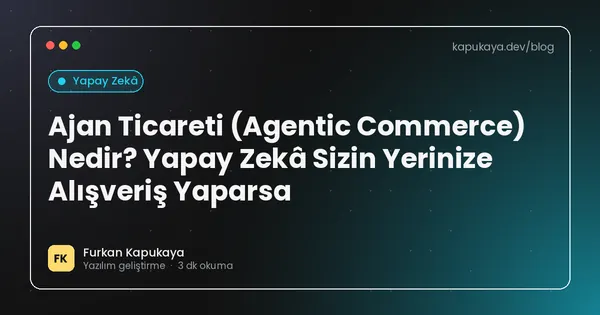
Ajan Ticareti (Agentic Commerce) Nedir? Yapay Zekâ Sizin Yerinize Alışveriş Yaparsa
Yapay zekâ ajanlarının ürün bulup ödeme yaptığı ajan ticareti; Google Universal Commerce Protocol (UCP), Agent Payments Protocol (AP2) ve OpenAI-Stripe Agentic Commerce Protocol (ACP) ile e-ticaret sitelerinin hazırlığı.
Yazıyı oku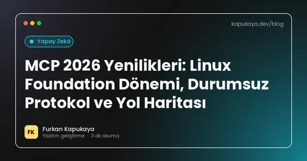
MCP 2026 Yenilikleri: Linux Foundation Dönemi, Durumsuz Protokol ve Yol Haritası
Model Context Protocol'ün Agentic AI Foundation'a devri, 28 Temmuz 2026 tarihli spesifikasyonla gelen durumsuz yapı ve güvenlik değişiklikleri, 2026 yol haritası ve işletmeler için MCP sunucusu planlama.
Yazıyı oku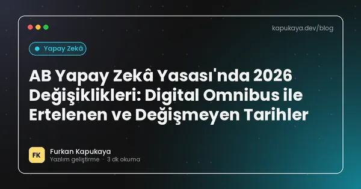
AB Yapay Zekâ Yasası'nda 2026 Değişiklikleri: Digital Omnibus ile Ertelenen ve Değişmeyen Tarihler
AB Yapay Zekâ Yasası'nı değiştiren Digital Omnibus düzenlemesi; yüksek riskli sistemler için ertelenen tarihler, 2 Ağustos 2026'da başlayan şeffaflık yükümlülükleri, yapay zekâ içeriği etiketleme ve AB'ye hizmet veren Türk şirketleri için yol haritası.
Yazıyı oku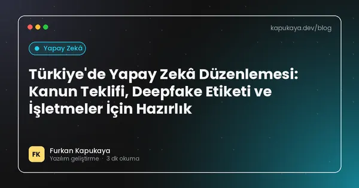
Türkiye'de Yapay Zekâ Düzenlemesi: Kanun Teklifi, Deepfake Etiketi ve İşletmeler İçin Hazırlık
TBMM'ye sunulan yapay zekâ kanun teklifinin öne çıkan maddeleri, deepfake içeriklerin etiketlenmesi, içerik kaldırma süreleri, KVKK ile ilişkisi ve yasalaşma sürecinde işletmelerin yapabilecekleri.
Yazıyı oku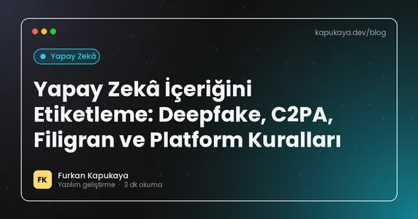
Yapay Zekâ İçeriğini Etiketleme: Deepfake, C2PA, Filigran ve Platform Kuralları
Yapay zekâ ile üretilen görsel, video ve metinlerin etiketlenmesi; AB Yapay Zekâ Yasası Madde 50, C2PA içerik kimlik bilgileri, görünmez filigranlar, sosyal medya platformlarının etiket kuralları ve işletmeler için pratik politika.
Yazıyı oku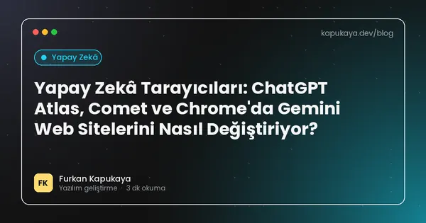
Yapay Zekâ Tarayıcıları: ChatGPT Atlas, Comet ve Chrome'da Gemini Web Sitelerini Nasıl Değiştiriyor?
Ajan özellikli yapay zekâ tarayıcılarının (agentic browser) çalışma mantığı, ChatGPT Atlas, Perplexity Comet, Chrome'da Gemini ve Edge Copilot Modu; web sitelerine etkisi, güvenlik riskleri ve sitenizi ajanlara hazırlama.
Yazıyı oku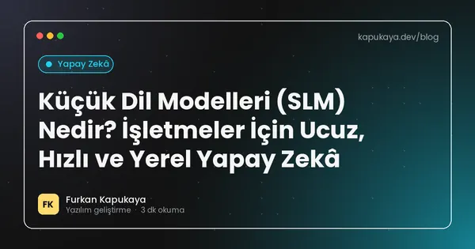
Küçük Dil Modelleri (SLM) Nedir? İşletmeler İçin Ucuz, Hızlı ve Yerel Yapay Zekâ
Küçük dil modellerinin (SLM) büyük modellerden farkı, hangi işlerde yeterli olduğu, cihaz üzerinde ve şirket sunucusunda çalıştırma, maliyet, gizlilik ve model seçimi için pratik rehber.
Yazıyı oku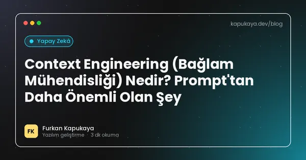
Context Engineering (Bağlam Mühendisliği) Nedir? Prompt'tan Daha Önemli Olan Şey
Bağlam mühendisliğinin prompt mühendisliğinden farkı; sistem talimatı, örnekler, araçlar, hafıza ve RAG ile modele doğru bilgiyi doğru zamanda vermek, bağlam penceresi yönetimi ve sık hatalar.
Yazıyı oku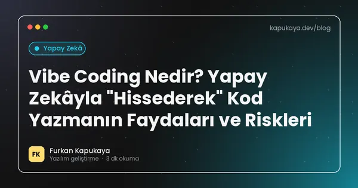
Vibe Coding Nedir? Yapay Zekâyla "Hissederek" Kod Yazmanın Faydaları ve Riskleri
Vibe coding kavramının kökeni, yapay zekâ ile hızlı prototip geliştirme, hangi işlerde işe yaradığı, güvenlik ve bakım riskleri, işletmelerin vibe coding ile yapılmış uygulamaları canlıya almadan önce yapması gerekenler.
Yazıyı oku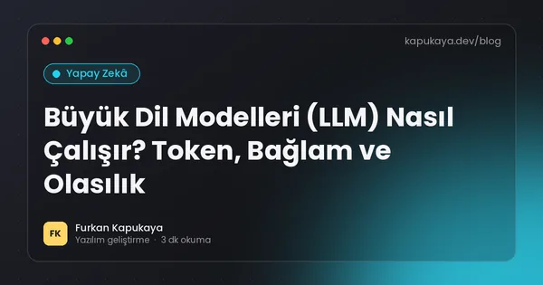
Büyük Dil Modelleri (LLM) Nasıl Çalışır? Token, Bağlam ve Olasılık
ChatGPT, Claude ve Gemini gibi büyük dil modellerinin temel çalışma mantığı; token, sonraki kelime tahmini, eğitim aşamaları, bağlam penceresi, sıcaklık ayarı ve modellerin güçlü ve zayıf yanları.
Yazıyı oku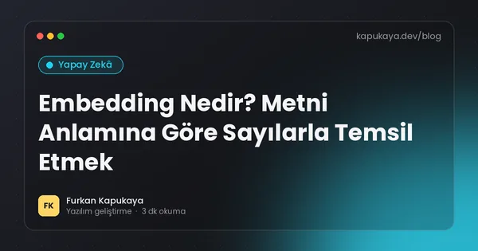
Embedding Nedir? Metni Anlamına Göre Sayılarla Temsil Etmek
Embedding (vektör temsili) kavramı, anlamsal benzerlik, kosinüs benzerliği, anlamsal arama, öneri, sınıflandırma ve kümeleme gibi kullanım alanları ile model seçimi ve maliyet ipuçları.
Yazıyı oku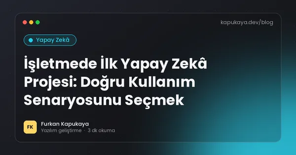
İşletmede İlk Yapay Zekâ Projesi: Doğru Kullanım Senaryosunu Seçmek
İşletmelerde yapay zekâ projesine başlarken kullanım senaryosu seçimi, etki ve uygulanabilirlik değerlendirmesi, veri hazırlığı, pilot proje, başarı ölçütleri ve sık yapılan hatalar.
Yazıyı oku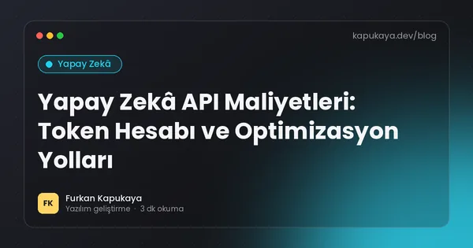
Yapay Zekâ API Maliyetleri: Token Hesabı ve Optimizasyon Yolları
Yapay zekâ API'lerinin token bazlı fiyatlandırması, girdi ve çıktı token maliyeti, aylık maliyet tahmini, model seçimi, istem önbelleği, toplu işleme ve maliyeti düşürmenin pratik yolları.
Yazıyı oku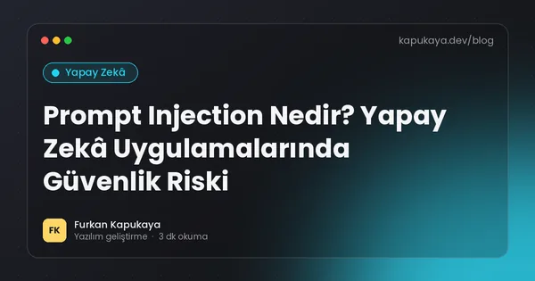
Prompt Injection Nedir? Yapay Zekâ Uygulamalarında Güvenlik Riski
Prompt injection saldırısının doğrudan ve dolaylı türleri, yapay zekâ ajanlarında veri sızdırma ve yetkisiz işlem riskleri, en az yetki, insan onayı ve çıktı doğrulama gibi savunma katmanları.
Yazıyı oku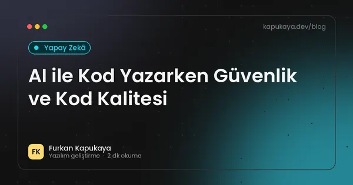
AI ile Kod Yazarken Güvenlik ve Kod Kalitesi
AI tarafından üretilen kodu doğrulama, secret yönetimi, test, code review ve güvenlik kontrolleri için pratik yaklaşım.
Yazıyı oku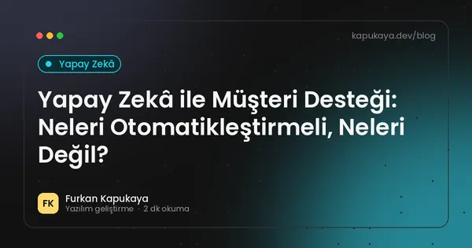
Yapay Zekâ ile Müşteri Desteği: Neleri Otomatikleştirmeli, Neleri Değil?
Müşteri hizmetlerinde yapay zekâ kullanımı, sık sorulan soruların otomatik cevaplanması, talep sınıflandırma, temsilci asistanı, insan desteğine devir, ölçüm ve müşteri güveni.
Yazıyı oku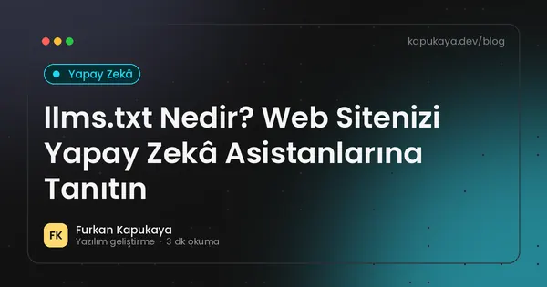
llms.txt Nedir? Web Sitenizi Yapay Zekâ Asistanlarına Tanıtın
llms.txt dosyasının amacı, formatı, robots.txt ve sitemap.xml ile farkı, örnek içerik, sınırlamaları ve yapay zekâ botları için genel öneriler.
Yazıyı oku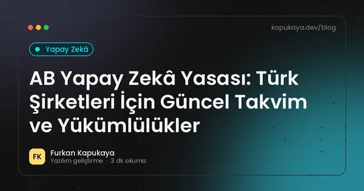
AB Yapay Zekâ Yasası: Türk Şirketleri İçin Güncel Takvim ve Yükümlülükler
AB Yapay Zekâ Yasası'nın risk temelli yapısı, yürürlükteki yasaklar ve genel amaçlı model kuralları, Dijital Omnibus ile ertelenen yüksek riskli sistem yükümlülükleri ve AB'ye hizmet veren Türk şirketlerinin yapması gerekenler.
Yazıyı oku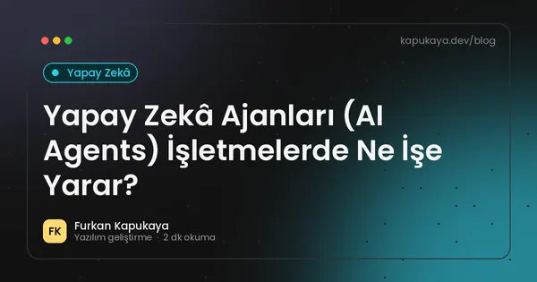
Yapay Zekâ Ajanları (AI Agents) İşletmelerde Ne İşe Yarar?
Yapay zekâ ajanlarının sohbet botlarından farkı, araç kullanımı, işletmelerdeki gerçekçi kullanım senaryoları, insan onayı, yetki sınırları ve güvenli devreye alma adımları.
Yazıyı oku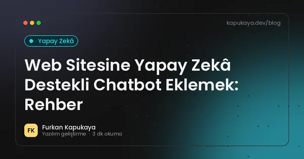
Web Sitesine Yapay Zekâ Destekli Chatbot Eklemek: Rehber
Web sitesi için yapay zekâ destekli sohbet asistanının kurgusu, bilgi kaynağı, sınırlar, insan desteğine devir, güvenlik, KVKK ve performans önerileri.
Yazıyı oku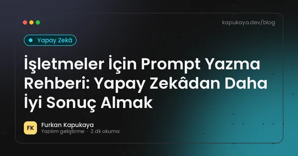
İşletmeler İçin Prompt Yazma Rehberi: Yapay Zekâdan Daha İyi Sonuç Almak
Yapay zekâ araçlarından daha doğru ve kullanışlı çıktı almak için bağlam verme, rol ve hedef belirleme, örnek kullanma, format isteme, adım adım çalışma ve gizlilik kuralları.
Yazıyı oku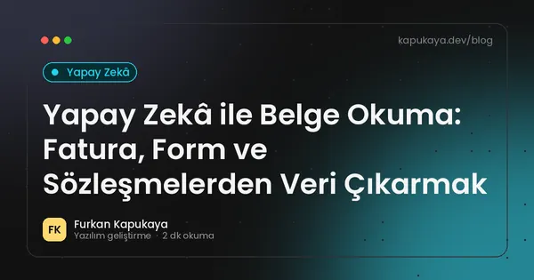
Yapay Zekâ ile Belge Okuma: Fatura, Form ve Sözleşmelerden Veri Çıkarmak
OCR ve yapay zekâ ile taranmış belgelerden, faturalardan ve formlardan yapılandırılmış veri çıkarma, doğrulama adımları, insan kontrolü, entegrasyon ve gizlilik önerileri.
Yazıyı oku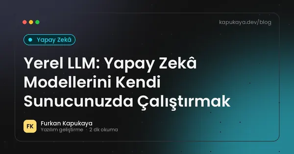
Yerel LLM: Yapay Zekâ Modellerini Kendi Sunucunuzda Çalıştırmak
Açık ağırlıklı dil modellerini şirket içi sunucuda çalıştırmanın gizlilik ve maliyet avantajları, donanım ihtiyacı, model lisansları, performans beklentisi ve hangi senaryolarda tercih edileceği.
Yazıyı oku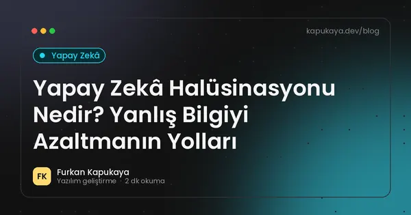
Yapay Zekâ Halüsinasyonu Nedir? Yanlış Bilgiyi Azaltmanın Yolları
Büyük dil modellerinin ikna edici ama yanlış bilgi üretmesinin nedenleri, iş süreçlerindeki riskleri, RAG, kaynak gösterme, doğrulama kuralları ve insan kontrolüyle hataları azaltma yöntemleri.
Yazıyı oku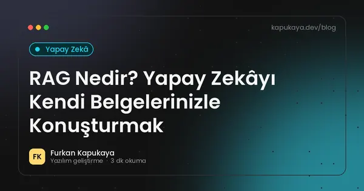
RAG Nedir? Yapay Zekâyı Kendi Belgelerinizle Konuşturmak
Retrieval-Augmented Generation (RAG) yaklaşımının çalışma mantığı, embedding ve vektör arama, belge hazırlığı, kaynak gösterme ve iş uygulamalarında kullanım.
Yazıyı oku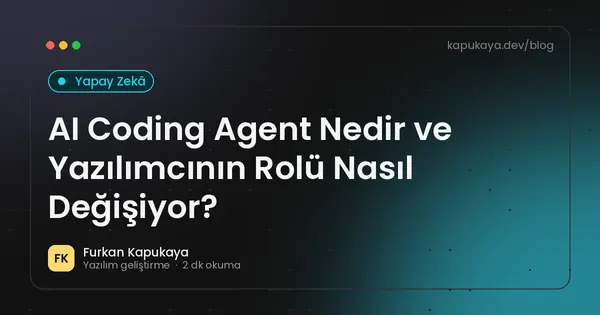
AI Coding Agent Nedir ve Yazılımcının Rolü Nasıl Değişiyor?
Coding agentların kod yazmanın ötesinde test, düzeltme, inceleme ve teslim süreçlerine nasıl dahil olduğunu anlatan rehber.
Yazıyı oku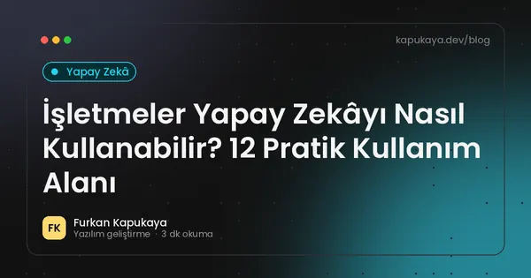
İşletmeler Yapay Zekâyı Nasıl Kullanabilir? 12 Pratik Kullanım Alanı
Küçük ve orta ölçekli işletmelerin müşteri hizmetleri, içerik, belge işleme, raporlama ve iç süreçlerde yapay zekâyı güvenli ve verimli kullanma yolları.
Yazıyı oku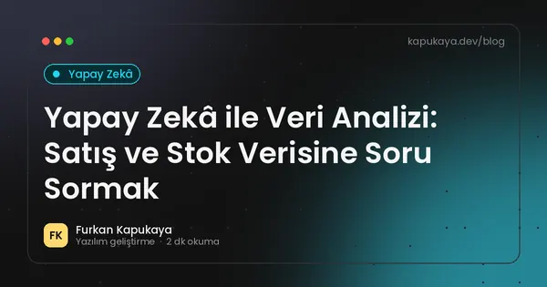
Yapay Zekâ ile Veri Analizi: Satış ve Stok Verisine Soru Sormak
İşletme verilerine doğal dille soru sorabilen yapay zekâ çözümleri, veritabanına güvenli erişim, salt okunur yetki, hesaplamaların doğrulanması, gizlilik ve yönetim paneli ile birlikte kullanım.
Yazıyı oku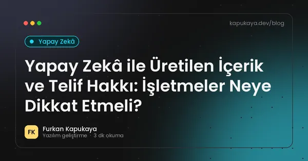
Yapay Zekâ ile Üretilen İçerik ve Telif Hakkı: İşletmeler Neye Dikkat Etmeli?
Yapay zekâ ile üretilen metin, görsel ve kodun telif durumu, FSEK'teki eser sahibi kavramı, araçların kullanım koşulları, başkasının eserine benzerlik riski, marka hakları ve şeffaflık önerileri.
Yazıyı oku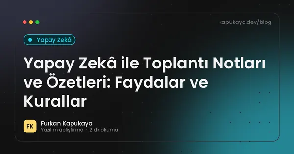
Yapay Zekâ ile Toplantı Notları ve Özetleri: Faydalar ve Kurallar
Toplantıların yapay zekâ ile yazıya dökülmesi ve özetlenmesi, görev çıkarma, CRM'e aktarma, katılımcıların bilgilendirilmesi, ses kaydının KVKK boyutu ve doğruluk kontrolü.
Yazıyı oku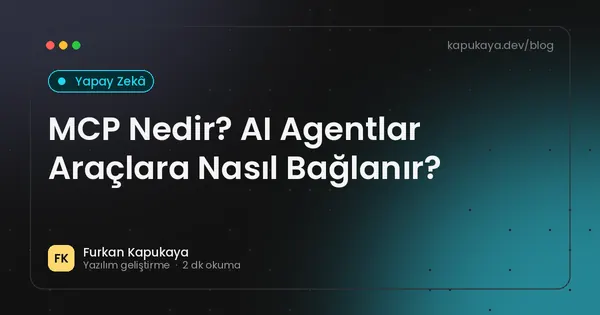
MCP Nedir? AI Agentlar Araçlara Nasıl Bağlanır?
Model Context Protocol yaklaşımını ve AI agentların araçlar, servisler ve proje bağlamıyla çalışmasını anlaşılır biçimde ele alın.
Yazıyı oku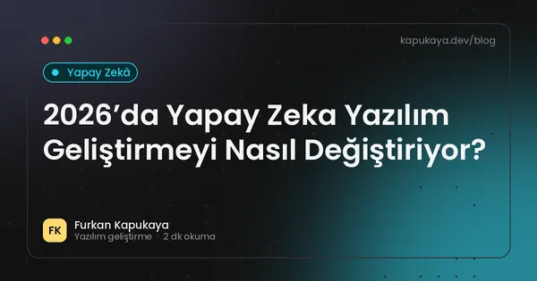
2026’da Yapay Zeka Yazılım Geliştirmeyi Nasıl Değiştiriyor?
AI destekli geliştirme, coding agent yaklaşımı, insan denetimi ve üretim süreçlerinde yeni çalışma biçimleri.
Yazıyı oku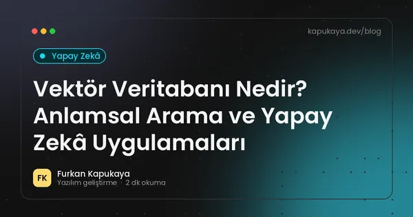
Vektör Veritabanı Nedir? Anlamsal Arama ve Yapay Zekâ Uygulamaları
Embedding ve vektör kavramları, vektör veritabanlarının çalışma mantığı, anlamsal arama, RAG ile ilişkisi, ayrı vektör veritabanı ile mevcut veritabanının vektör özelliklerini kullanma karşılaştırması.
Yazıyı oku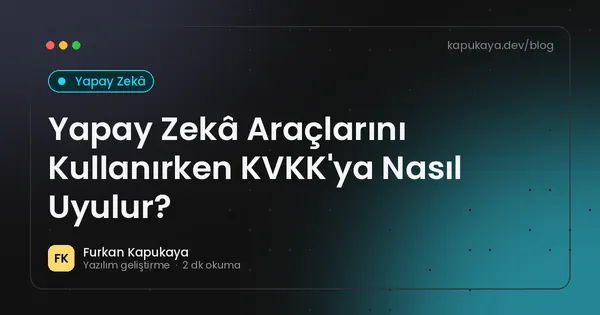
Yapay Zekâ Araçlarını Kullanırken KVKK'ya Nasıl Uyulur?
İşletmelerin üretken yapay zekâ araçlarını kullanırken kişisel verileri koruması, veri minimizasyonu, anonimleştirme, yurt dışı aktarım, aydınlatma, kurumsal sözleşmeler ve iç politika önerileri.
Yazıyı oku
Aramanızla eşleşen yazı bulunamadı. Farklı bir kelime deneyin veya tüm yazıları gösterin.